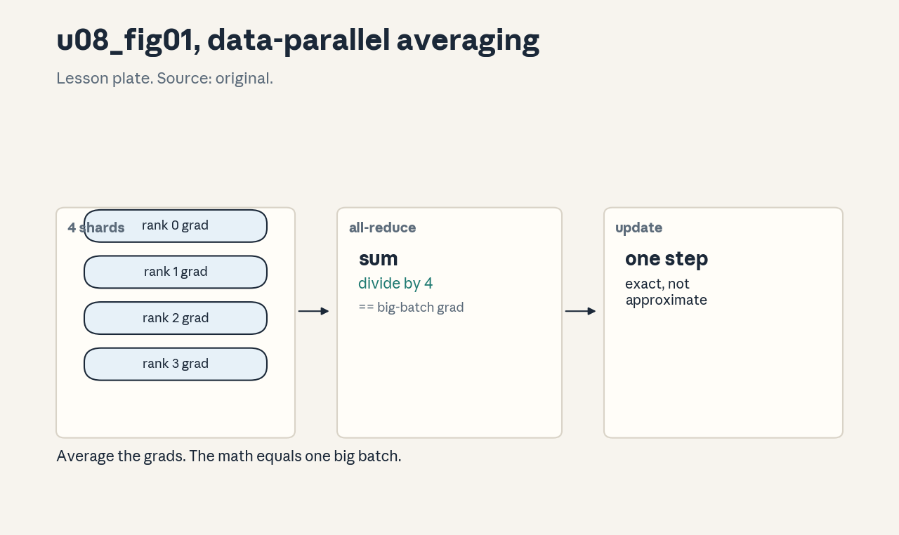
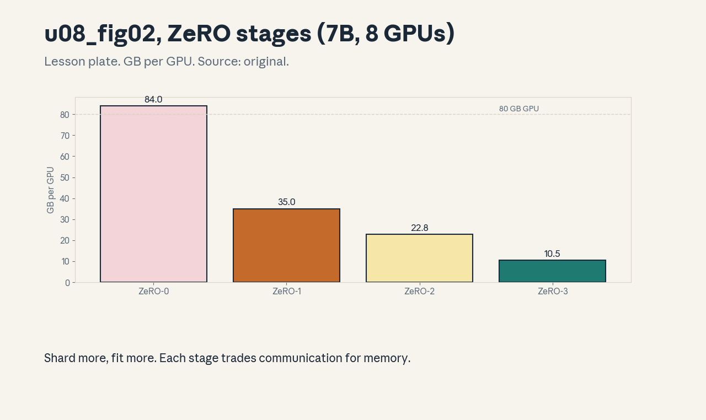
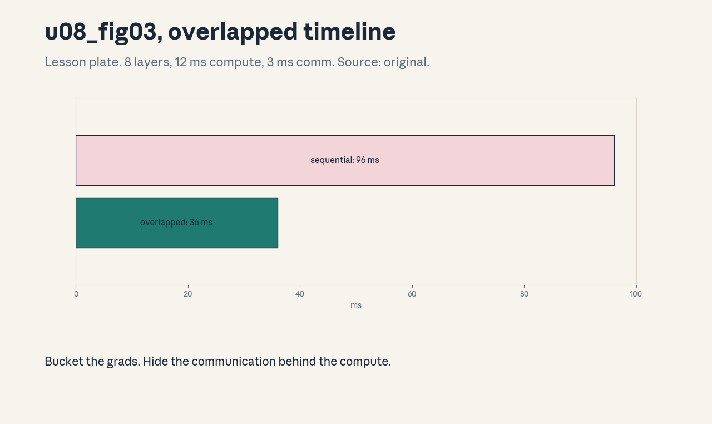

U08 · Data and optimizer sharding
U08 , Data and optimizer sharding
Prerequisites: P02, P12, P16, P17. Bridge links in ../prerequisites.md.
Session: cross-cutting branch (distributed training reported across
course sessions, exact mapping in ../course_map.md).
Claim class: REQUESTED-BRANCH. All leaves PLANNED / SOURCE ATTRIBUTION
PENDING. Notation: see ../notation_and_shapes.md.
Standing note
No cluster on this box. Distributed algorithms are studied as numpy simulations of the math (averaging, sharding layouts, time models), every number is computed from stated assumptions. The lesson never claims a multi-GPU measurement.
Local remediation , why shard
Read this if diagnostic items D10 or D12 were not full marks. A 7B
model in fp16 with Adam needs 14 GB params + 14 GB grads + 56 GB
optimizer states = 84 GB: more than one 80 GB GPU holds. Data
parallelism replicates the model and splits the batch, ZeRO shards
the states so the 84 GB divides across GPUs: 10.5 GB/GPU at ZeRO-3
over 8 (from assets/compute_u08.py, executed 2026-10-06).
Assessment: a 13B model needs how much replicated, and what does
ZeRO-3 over 8 give per GPU? Key: ../keys/u08_answers.md R1.
C01: Data-parallel gradient averaging
Leaf id cs336-U08-C01. Claim class REQUESTED-BRANCH.
Status PLANNED / SOURCE ATTRIBUTION PENDING.
-
Source mapping, scope, objectives, dependencies. Branch. Scope: the DP update rule. Objectives: prove the averaged update equals the big-batch update. Depends on P16, U05-C08.
-
Motivating question and toy. Question: N GPUs each see 1/N of the batch, what update keeps the math identical? Toy from
compute_u08.py: mean of shard grads equals the big-batch grad exactly. -
Mental model. Each rank computes grads on its shard, all- reduces (sums) them, divides by N. The result is the exact gradient of the concatenated batch: DP is algebraically identical to one big batch (up to RNG, U05-C08).
-
Objects, symbols, units, shapes, assumptions. N ranks, grads same shape as params. Assumption: the loss is a mean over the batch.
-
Derivation / mechanism. grad(mean over N*m) = mean over ranks of grad(shard means). All-reduce sums, dividing by N completes the mean.
-
Computed example. From
assets/compute_u08.py(executed 2026-10-06): the mean identity holds exactly. -
Algorithm and reference implementation.
dp_step(shard_grads): sum and divide. About 4 lines of numpy simulating N=4. -
Correctness checks and expected output. Matches the big-batch grad to 1e-12, the lab asserts it. Expected outputs in the lab key.
-
Costs. Communication of the full grads per step, memory is replicated (the problem C03 solves).
-
Nearest alternative and selection boundary. Bigger single- GPU batch (limited by memory). DP scales the batch across devices.
-
Failure case and counterexample. Forgetting the /N: the effective lr multiplies by N and training diverges. Same bug class as U05-C08, check the convention.
-
Research reading and falsifiable extension. Reading: data- parallel training analyses (primary: framework docs). Extension: simulate N=4 with distinct shards, hypothesis: exact match.
-
Assessment. (a) Recall: the DP update rule. (b) Oral ladder: define the shard, prove the mean identity, justify all-reduce, implement, compare with big batch, debug the missing /N, critique the mean-loss assumption, design the N=4 simulation. (c) Transfer: batchnorm is in the model. What breaks? Answers:
../keys/u08_answers.mdA1. -
Lab and exercises. Lab U08 task 1 simulates DP averaging. See
../labs/u08_lab.md. -
Visuals. Figure u08_fig01: lesson plate, shards -> all-reduce -> update. Source: original. Render:
assets/render_u08.py.

C02: All-reduce algorithms
Leaf id cs336-U08-C02. Claim class REQUESTED-BRANCH.
Status PLANNED / SOURCE ATTRIBUTION PENDING.
-
Source mapping, scope, objectives, dependencies. Branch. Scope: ring versus tree. Objectives: write the time models, pick by regime. Depends on P16, U06-C08.
-
Motivating question and toy. Question: which all-reduce for 14 GB over 8 GPUs? Toy from
compute_u08.py: ring takes 0.122 s at 200 GB/s. -
Mental model. Ring: bandwidth-optimal, time ~= 2(N-1)/N * bytes/bw, independent of N for large N. Tree: latency-optimal, 2log2(N) steps, better for small messages. Large grads use ring, small scalars use tree.
-
Objects, symbols, units, shapes, assumptions. Bytes, GB/s, N. Assumption: the ring model.
-
Derivation / mechanism. Ring: each rank sends 2(N-1)/N of the data in N-1 steps. Tree: reduce up and broadcast down, each 2log2(N) hops of latency plus bandwidth terms.
-
Computed example. From
assets/compute_u08.py(executed 2026-10-06): 0.122 s for the ring on 14 GB. -
Algorithm and reference implementation.
ring_time(bytes, bw, N),tree_time(...): the formulas. About 6 lines. -
Correctness checks and expected output. Ring time -> 2*bytes/ bw as N grows, tree wins below ~1 MB. Expected outputs in the lab key.
-
Costs. The formulas guide bucket sizing (C04).
-
Nearest alternative and selection boundary. All-gather / reduce-scatter (the pieces of ring all-reduce, used in ZeRO). Pick by message size.
-
Failure case and counterexample. Tree for 14 GB: latency terms are fine but the bandwidth term is worse than ring. The assumption “fewer steps is better” breaks for large messages, bandwidth dominates.
-
Research reading and falsifiable extension. Reading: collective algorithms (primary: paper sections). Extension: find the crossover message size, hypothesis: ~1 MB at these link speeds.
-
Assessment. (a) Recall: the two time models. (b) Oral ladder: define the 2x factor, compute the toy, justify N-independence, implement, compare, debug the tree-for-large case, critique the model, design the crossover. (c) Transfer: N=1024. Which, and why? Answers:
../keys/u08_answers.mdA2. -
Lab and exercises. Lab U08 task 2 compares the models. See
../labs/u08_lab.md. -
Visuals. Audit row: the algorithm comparison table. No figure, tabular claim.
C03: ZeRO stages
Leaf id cs336-U08-C03. Claim class REQUESTED-BRANCH.
Status PLANNED / SOURCE ATTRIBUTION PENDING.
-
Source mapping, scope, objectives, dependencies. Branch. Scope: sharding optimizer states, grads, params. Objectives: compute per-GPU bytes for each stage. Depends on C01, P17.
-
Motivating question and toy. Question: where do the 84 GB go? Toy from
compute_u08.py(7B, 8 GPUs): ZeRO-1: 35.0, ZeRO-2: 22.8, ZeRO-3: 10.5 GB/GPU. -
Mental model. ZeRO-1 shards optimizer states, ZeRO-2 adds grads, ZeRO-3 adds params (gathered on demand per layer). Each stage trades communication for memory: stage 3 adds an all-gather per layer in forward and backward.
-
Objects, symbols, units, shapes, assumptions. GB/GPU. 7B model, fp16 params/grads, fp32 Adam states. Assumption: even sharding.
-
Derivation / mechanism. Bytes/GPU = replicated parts + sharded parts / N. Stage 1: (14+14+56/8), stage 2: (14+(14+56)/8), stage 3: 84/8.
-
Computed example. From
assets/compute_u08.py(executed 2026-10-06): 35.0, 22.8, 10.5 GB/GPU. -
Algorithm and reference implementation.
zero_bytes(stage, N, P): the formula. About 8 lines. -
Correctness checks and expected output. Stage 3 = total/N, stage 0 = total. Monotonic decrease. Expected outputs in the lab key.
-
Costs. Stage 3’s all-gathers add ~50 percent communication, overlap (C08) hides most of it.
-
Nearest alternative and selection boundary. Model parallelism (U09) for single layers that exceed one GPU. ZeRO for the common case.
-
Failure case and counterexample. ZeRO-3 with tiny layers: the all-gather latency dominates and training slows versus ZeRO-2. The assumption “more sharding is better” breaks when communication is latency-bound, match the stage to the model.
-
Research reading and falsifiable extension. Reading: the ZeRO paper (Rajbhandari et al., 2020, primary). Extension: compute the 13B numbers, hypothesis: stage 3 fits 8x80GB.
-
Assessment. (a) Recall: what each stage shards. (b) Oral ladder: define the shard sets, compute the toy, justify the all-gather, implement, compare stages, debug the tiny-layer case, critique the even-shard assumption, design the 13B check. (c) Transfer: one layer has 5B params. Which stage, and what else is needed? Answers:
../keys/u08_answers.mdA3. -
Lab and exercises. Lab U08 task 3 computes the stage table. See
../labs/u08_lab.md. -
Visuals. Figure u08_fig02: lesson plate, the three stages as bar charts. Source: original. Render:
assets/render_u08.py.

C04: Gradient bucketing and overlap
Leaf id cs336-U08-C04. Claim class REQUESTED-BRANCH.
Status PLANNED / SOURCE ATTRIBUTION PENDING.
-
Source mapping, scope, objectives, dependencies. S-branch. Scope: hiding communication. Objectives: explain bucketing, compute the overlapped schedule. Depends on C02, P16.
-
Motivating question and toy. Question: must the backward finish before any communication? Toy from
compute_u08.py: 8 layers at 12 ms compute + 3 ms bucket all-reduce: 96 ms sequential versus 36 ms overlapped. -
Mental model. Bucket grads as layers finish (reverse order), all-reduce each bucket while the next layer’s backward computes. Communication hides behind compute when buckets are sized so all-reduce time <= layer time.
-
Objects, symbols, units, shapes, assumptions. ms. Bucket size ~25-50 MB typical. Assumption: the toy times.
-
Derivation / mechanism. Total = max(compute chain, comm chain) + edge effects. With comm <= compute per layer, the total is ~compute + one bucket.
-
Computed example. From
assets/compute_u08.py(executed 2026-10-06): 96 ms versus 36 ms. -
Algorithm and reference implementation. The overlapped schedule simulator: two timelines. About 12 lines.
-
Correctness checks and expected output. Overlapped <= sequential, equality when comm = 0. Expected outputs in the lab key.
-
Costs. Bucket memory (one extra copy), tuning the bucket size.
-
Nearest alternative and selection boundary. No overlap (simple, slow). Overlap is standard.
-
Failure case and counterexample. Buckets too large: the first all-reduce starts late and the tail is exposed. The assumption “any bucketing hides comm” breaks, size buckets so each finishes within its layer’s compute.
-
Research reading and falsifiable extension. Reading: framework DDP docs (primary). Extension: sweep the bucket size in the simulator, hypothesis: optimum near comm=compute.
-
Assessment. (a) Recall: the bucketing rule. (b) Oral ladder: define the bucket, compute the toy, justify reverse order, implement the simulator, compare, debug the large-bucket case, critique the toy times, design the sweep. (c) Transfer: compute is 2x comm per layer. Bucket size? Answers:
../keys/u08_answers.mdA4. -
Lab and exercises. Lab U08 task 4 simulates the schedule. See
../labs/u08_lab.md. -
Visuals. Audit row: the timeline table. No figure, tabular claim.
C05: Mixed precision and loss scaling
Leaf id cs336-U08-C05. Claim class REQUESTED-BRANCH.
Status PLANNED / SOURCE ATTRIBUTION PENDING.
-
Source mapping, scope, objectives, dependencies. S-branch. Scope: fp16 training stability. Objectives: explain loss scaling, state the master-weights rule. Depends on P08, U05-C12.
-
Motivating question and toy. Question: tiny grads vanish in fp16. What now? Toy from
compute_u08.py: grad 6e-8 underflows, scaled by 1024 it is 6.14e-05, representable, unscale after. -
Mental model. Keep master weights in fp32, compute in fp16. Multiply the loss by S before backward: grads shift into the representable range. Unscale before the optimizer step, skip the step on overflow, adapt S dynamically.
-
Objects, symbols, units, shapes, assumptions. S: scale (often 2^10-2^16). Assumption: the toy grad value.
-
Derivation / mechanism. d(Sloss)/dw = Sdloss/dw: linear, so dividing by S recovers the true grad. Overflow in any grad sets the skip flag.
-
Computed example. From
assets/compute_u08.py(executed 2026-10-06): 6e-8 -> 6.14e-05 at S=1024. -
Algorithm and reference implementation.
scaled_step(...): scale, backward, unscale, check, step-or-skip. About 10 lines. -
Correctness checks and expected output. Unscaled grads match fp32 grads, overflow triggers a skip, not a nan. Expected outputs in the lab key.
-
Costs. One extra fp32 weight copy, the alternative is divergence.
-
Nearest alternative and selection boundary. bf16 (wider range, often no scaling needed). fp16 needs the scaler.
-
Failure case and counterexample. Fixed S too large: every step overflows and training silently stalls (all steps skipped). The assumption “bigger S is safer” breaks, dynamic scaling exists for this.
-
Research reading and falsifiable extension. Reading: mixed- precision training guides (primary). Extension: simulate the skip counter, hypothesis: occasional skips are fine, constant skips stall.
-
Assessment. (a) Recall: the scale/unscale/skip loop. (b) Oral ladder: define the underflow, compute the toy, justify master weights, implement, compare with bf16, debug the stall, critique the fixed-S assumption, design the skip simulation. (c) Transfer: grads overflow every step at S=65536. Response? Answers:
../keys/u08_answers.mdA5. -
Lab and exercises. Lab U08 task 5 simulates loss scaling. See
../labs/u08_lab.md. -
Visuals. Audit row: the dtype table (what lives in which precision). No figure, tabular claim.
C06: FSDP sharding mechanics
Leaf id cs336-U08-C06. Claim class REQUESTED-BRANCH.
Status PLANNED / SOURCE ATTRIBUTION PENDING.
-
Source mapping, scope, objectives, dependencies. S-branch. Scope: fully-sharded data parallel. Objectives: describe the all-gather/compute/release cycle. Depends on C03.
-
Motivating question and toy. Question: how does ZeRO-3 run a layer whose params live on 8 GPUs? Toy: the lab simulates the gather-compute-shard cycle on a toy layer.
-
Mental model. Before a layer: all-gather its params (each rank contributes its shard). Compute. After: release the gathered params (keep the shard). Backward: same, plus reduce- scatter the grads into shards.
-
Objects, symbols, units, shapes, assumptions. Shard: 1/N of the params. Assumption: even sharding.
-
Derivation / mechanism. The cycle’s communication per layer: 2 all-gathers (forward + backward) + 1 reduce-scatter. The compute sees full params, memory holds shards.
-
Computed example. Lab: toy layer 1M params over 4 ranks: gathered 4 MB bf16 per layer use, resident 1 MB.
-
Algorithm and reference implementation. The cycle simulator: gather, compute, release. About 10 lines.
-
Correctness checks and expected output. Outputs match the unsharded computation, peak memory matches the shard math. Expected outputs in the lab key.
-
Costs. Communication per layer, mitigated by overlap and large layers.
-
Nearest alternative and selection boundary. ZeRO-2 + DP (less comm, more memory). FSDP when memory binds.
-
Failure case and counterexample. Wrapping each tiny op as a unit: all-gather latency dominates. The assumption “finer is better” breaks, wrap at layer granularity or larger.
-
Research reading and falsifiable extension. Reading: FSDP papers/docs (primary). Extension: vary the wrap size in the simulator, hypothesis: optimum at coarse units.
-
Assessment. (a) Recall: the cycle steps. (b) Oral ladder: define the shard, trace one layer, justify the release, implement, compare with ZeRO-2, debug the tiny-unit case, critique the even assumption, design the wrap sweep. (c) Transfer: layers vary 100x in size. Wrap policy? Answers:
../keys/u08_answers.mdA6. -
Lab and exercises. Lab U08 task 6 simulates the FSDP cycle. See
../labs/u08_lab.md. -
Visuals. Audit row: the cycle table. No figure, tabular claim.
C07: Checkpoint consolidation
Leaf id cs336-U08-C07. Claim class REQUESTED-BRANCH.
Status PLANNED / SOURCE ATTRIBUTION PENDING.
-
Source mapping, scope, objectives, dependencies. S-branch. Scope: saving sharded state. Objectives: describe gather-to-one versus per-rank saves. Depends on C03, U05-C11.
-
Motivating question and toy. Question: each rank holds 1/8 of the optimizer: how do you save? Toy: the lab models both layouts and their byte counts.
-
Mental model. Option A: all-gather to rank 0, save one file (simple, slow, memory spike). Option B: each rank saves its shard (fast, N files, needs consolidation to resume on different N).
-
Objects, symbols, units, shapes, assumptions. Files and bytes. Assumption: the 7B ZeRO-3 layout.
-
Derivation / mechanism. Sharded save: N files of total/N each. Resuming on M != N ranks needs resharding: concatenate then re-split.
-
Computed example. Lab: 84 GB total, option A writes one 84 GB file, option B writes 8 x 10.5 GB.
-
Algorithm and reference implementation. The reshard procedure: load shards, concat, split. About 8 lines.
-
Correctness checks and expected output. Resharded state matches the original exactly. Expected outputs in the lab key.
-
Costs. Option A spikes memory, option B complicates tooling.
-
Nearest alternative and selection boundary. Framework checkpoint APIs (handle this internally). Know the tradeoff when debugging.
-
Failure case and counterexample. Resuming sharded files on a different N without resharding: shape mismatches, crash. The assumption “checkpoints are portable” breaks, record N in the metadata.
-
Research reading and falsifiable extension. Reading: framework checkpoint docs (primary). Extension: reshard the toy 8->4, hypothesis: exact.
-
Assessment. (a) Recall: the two layouts. (b) Oral ladder: define the shard files, compute the bytes, justify resharding, implement, compare, debug the N-mismatch, critique portability, design the 8->4 check. (c) Transfer: the cluster changes size weekly. Policy? Answers:
../keys/u08_answers.mdA7. -
Lab and exercises. Lab U08 task 7 models both layouts. See
../labs/u08_lab.md. -
Visuals. Audit row: the layout table. No figure, tabular claim.
C08: Communication-compute overlap
Leaf id cs336-U08-C08. Claim class REQUESTED-BRANCH.
Status PLANNED / SOURCE ATTRIBUTION PENDING.
-
Source mapping, scope, objectives, dependencies. S-branch. Scope: hiding collectives. Objectives: state the overlap condition, compute the hidden fraction. Depends on C04, U06-C08.
-
Motivating question and toy. Question: when is communication free? Toy: comm <= compute per layer hides fully (C04’s 96->36 ms).
-
Mental model. Overlap needs independent work: the next layer’s compute runs while the previous layer’s collective flies. The condition: collective time <= compute time of the overlapping region. Exposed comm is the remainder.
-
Objects, symbols, units, shapes, assumptions. ms. Assumption: the hardware supports async collectives.
-
Derivation / mechanism. Exposed = max(0, comm - compute). Total = compute + exposed. Bucketing (C04) and prefetching shape the schedule to satisfy the condition.
-
Computed example. From
assets/compute_u08.py(executed 2026-10-06): exposed 36-12 = 24 ms of comm… precisely: total 36 ms versus 96 sequential. -
Algorithm and reference implementation. The overlap calculator: given per-layer compute/comm, return exposed. About 6 lines.
-
Correctness checks and expected output. Exposed = 0 when comm <= compute, equals comm - compute otherwise. Expected outputs in the lab key.
-
Costs. Scheduling complexity, the alternative is exposed communication.
-
Nearest alternative and selection boundary. Faster links (money). Overlap is the software answer.
-
Failure case and counterexample. Overlapping with the wrong stream dependency: the “overlap” serializes and nothing hides. The assumption “async means parallel” breaks without correct stream synchronization.
-
Research reading and falsifiable extension. Reading: overlap analyses (primary: paper sections). Extension: sweep comm/compute ratios, hypothesis: linear exposed past 1.0.
-
Assessment. (a) Recall: the overlap condition. (b) Oral ladder: define exposed, compute the toy, justify independence, implement, compare with faster links, debug the serialization, critique the async assumption, design the sweep. (c) Transfer: comm is 3x compute. Options? Answers:
../keys/u08_answers.mdA8. -
Lab and exercises. Lab U08 task 8 computes exposed comm. See
../labs/u08_lab.md. -
Visuals. Figure u08_fig03: lesson plate, the overlapped timeline. Source: original. Render:
assets/render_u08.py.

C09: Scaling efficiency measurement
Leaf id cs336-U08-C09. Claim class REQUESTED-BRANCH.
Status PLANNED / SOURCE ATTRIBUTION PENDING.
-
Source mapping, scope, objectives, dependencies. S-branch. Scope: weak versus strong scaling. Objectives: compute efficiency, state what good looks like. Depends on C08, U06-C05.
-
Motivating question and toy. Question: 8 GPUs, 8x faster? Toy from
compute_u08.py: 100 s on 1, 14 s on 8: 89 percent efficiency. -
Mental model. Strong scaling: fixed work, more GPUs: efficiency = T1/(N*TN). Weak scaling: fixed work per GPU. 85-95 percent is healthy, below 70 percent, something is wrong.
-
Objects, symbols, units, shapes, assumptions. Percent. Assumption: the toy times.
-
Derivation / mechanism. Ideal TN = T1/N. Efficiency measures the overhead: communication, imbalance, stragglers.
-
Computed example. From
assets/compute_u08.py(executed 2026-10-06): 89 percent. -
Algorithm and reference implementation.
efficiency(T1, TN, N): two lines. -
Correctness checks and expected output. 100 percent at ideal, decreases with overhead. Expected outputs in the lab key.
-
Costs. Measurement time, the alternative is blind scaling.
-
Nearest alternative and selection boundary. Profiling the step breakdown (deeper). Efficiency is the headline number.
-
Failure case and counterexample. One straggler GPU: all collectives wait, efficiency tanks, and the average looks like a communication problem. The assumption “GPUs are identical” breaks, check per-rank timings.
-
Research reading and falsifiable extension. Reading: scaling reports (primary). Extension: inject a straggler in the simulator, hypothesis: efficiency drops disproportionately.
-
Assessment. (a) Recall: the efficiency formula. (b) Oral ladder: define strong vs weak, compute the toy, justify the ideal, implement, compare with profiling, debug the straggler, critique the identical-GPU assumption, design the injection. (c) Transfer: efficiency 55 percent at 64 GPUs. First three checks? Answers:
../keys/u08_answers.mdA9. -
Lab and exercises. Lab U08 task 9 computes efficiency and the straggler effect. See
../labs/u08_lab.md. -
Visuals. Audit row: the scaling table. No figure, tabular claim.
C10: Fault tolerance and preemption
Leaf id cs336-U08-C10. Claim class REQUESTED-BRANCH.
Status PLANNED / SOURCE ATTRIBUTION PENDING.
-
Source mapping, scope, objectives, dependencies. S-branch. Scope: surviving rank failure. Objectives: state the checkpoint- restart contract. Depends on C07, U05-C11.
-
Motivating question and toy. Question: a GPU dies at 3am. What is lost? Toy: the lab models lost work = time since last checkpoint, the contract bounds it.
-
Mental model. Checkpoint every k steps (U05-C11), on failure, restart from the latest. Lost work <= k steps. Elastic training re-forms the group at a new N (needs resharding, C07).
-
Objects, symbols, units, shapes, assumptions. k steps. Assumption: checkpoints are frequent enough.
-
Derivation / mechanism. Expected waste = checkpoint cost + (failure rate * k/2 * step time). Optimize k against the failure rate.
-
Computed example. Lab: k=100, step 10 s, failure every 24 h: expected waste per failure ~500 s of work + restart.
-
Algorithm and reference implementation. The waste model: three lines.
-
Correctness checks and expected output. Waste grows with k, checkpoint cost bounds k from below. Expected outputs in the lab key.
-
Costs. Checkpoint I/O versus lost work.
-
Nearest alternative and selection boundary. Redundant compute (expensive). Checkpoint-restart is standard.
-
Failure case and counterexample. Checkpointing to the same dying filesystem: the checkpoint is corrupt and the restart fails. The assumption “the checkpoint survived” breaks, verify writes and keep two.
-
Research reading and falsifiable extension. Reading: large- run reliability reports (primary). Extension: optimize k for the toy numbers, hypothesis: k ~ 100-500.
-
Assessment. (a) Recall: the contract. (b) Oral ladder: define lost work, compute the toy, justify elastic resharding, implement the model, compare with redundancy, debug the corrupt checkpoint, critique the rate assumption, design the k optimization. (c) Transfer: preemptions every 2 hours. k? Answers:
../keys/u08_answers.mdA10. -
Lab and exercises. Lab U08 task 10 models the waste. See
../labs/u08_lab.md. -
Visuals. Audit row: the waste table. No figure, tabular claim.
C11: Deterministic data loading
Leaf id cs336-U08-C11. Claim class REQUESTED-BRANCH.
Status PLANNED / SOURCE ATTRIBUTION PENDING.
-
Source mapping, scope, objectives, dependencies. S-branch. Scope: identical batches across resumes. Objectives: state the sharding and seeding rules. Depends on P02, U05-C11.
-
Motivating question and toy. Question: each rank must see different data, deterministically. Toy: the lab shards a toy dataset by rank and checks disjointness and coverage.
-
Mental model. Shard the dataset by rank (interleaved or contiguous), seed each worker’s RNG from (seed, epoch, rank). Resume restores the loader position (U05-C11). Determinism = same (seed, epoch, rank, N) gives the same batches.
-
Objects, symbols, units, shapes, assumptions. Indices and seeds. Assumption: the dataset is static.
-
Derivation / mechanism. rank r takes indices r, r+N, r+2N… (or a contiguous chunk). The epoch seed shuffles globally first.
-
Computed example. Lab: 100 items, 4 ranks: 25 each, disjoint, union = all.
-
Algorithm and reference implementation.
shard_indices(n, N, r, seed, epoch): shuffle then slice. About 6 lines. -
Correctness checks and expected output. Disjoint, covering, deterministic across calls. Expected outputs in the lab key.
-
Costs. None at runtime, bugs here silently bias training.
-
Nearest alternative and selection boundary. Centralized batching (simpler, slower). Sharded loading is standard.
-
Failure case and counterexample. Same seed on all ranks: every rank trains on identical data, the effective batch is 1/N and the run looks mysteriously slow to converge. The assumption “seeds differ” breaks silently, the symptom is weak scaling of loss.
-
Research reading and falsifiable extension. Reading: framework data-loading docs (primary). Extension: verify the disjointness on the toy, hypothesis: exact.
-
Assessment. (a) Recall: the sharding rule. (b) Oral ladder: define the shard, check disjointness, justify per-rank seeds, implement, compare with centralized, debug the shared seed, critique the static assumption, design the check. (c) Transfer: N changes mid-run. What must be recomputed? Answers:
../keys/u08_answers.mdA11. -
Lab and exercises. Lab U08 task 11 implements sharded loading. See
../labs/u08_lab.md. -
Visuals. Audit row: the sharding table. No figure, tabular claim.
C12: Distributed correctness invariants
Leaf id cs336-U08-C12. Claim class REQUESTED-BRANCH.
Status PLANNED / SOURCE ATTRIBUTION PENDING.
-
Source mapping, scope, objectives, dependencies. S-branch. Scope: cheap alarms for distributed runs. Objectives: state the invariants, implement them. Depends on C01, U05-C12.
-
Motivating question and toy. Question: the loss looks fine, is the distribution right? Toy: the lab checks four invariants on the simulator.
-
Mental model. Invariants: (1) DP update equals big-batch update, (2) shards are disjoint and covering, (3) all ranks agree on the step count, (4) checkpoint reshard round-trips exactly.
-
Objects, symbols, units, shapes, assumptions. Equalities to tolerance. Assumption: the simulator models the real ops.
-
Derivation / mechanism. Each invariant is an independent re-derivation of a distributed property from the single-GPU semantics.
-
Computed example. Lab: all four pass on the correct simulator, the missing-/N bug fails invariant 1.
-
Algorithm and reference implementation.
dist_invariants( ...): the four asserts. About 10 lines. -
Correctness checks and expected output. Each injected bug fails exactly one invariant. Expected outputs in the lab key.
-
Costs. Seconds, run before scaling up.
-
Nearest alternative and selection boundary. Full distributed test (needs hardware). Invariants on the simulator are the first gate.
-
Failure case and counterexample. Invariants pass but NCCL hangs at scale: the math is right, the system is not. The assumption “math covers systems” breaks, invariants complement systems testing.
-
Research reading and falsifiable extension. Reading: distributed testing guides (primary). Extension: inject each bug, hypothesis: one invariant each.
-
Assessment. (a) Recall: the four invariants. (b) Oral ladder: define each, derive invariant 1, justify the round-trip, implement, compare with hardware tests, debug the hang, critique sufficiency, design the injection. (c) Transfer: a new sharding scheme is proposed. Which invariant is written first? Answers:
../keys/u08_answers.mdA12. -
Lab and exercises. Lab U08 task 12 implements the invariants. See
../labs/u08_lab.md. -
Visuals. Audit row: the invariant checklist. No figure, tabular claim.
Unit Russian-doll ladder (U08)
- Shell 0: how does training span GPUs without changing the math?
- Shell 1: one DP step, one ZeRO table, one all-reduce time.
- Shell 2: ranks, shards, buckets, scales, checkpoints.
- Shell 3: one averaging, one bucket, one reshard.
- Shell 4: the DP simulator, the overlap calculator, the invariant checks.
- Shell 5: 10.5 GB/GPU, 0.122 s, 89 percent.
- Shell 6: change N, predict the bytes, observe.
- Shell 7: drop the /N, share the seed, skip the unscale.
- Shell 8: ring vs tree, ZeRO-2 vs 3, overlap vs faster links.
- Shell 9: straggler injection, k optimization.
- Shell 10: the distribution plan is the production scaling contract.